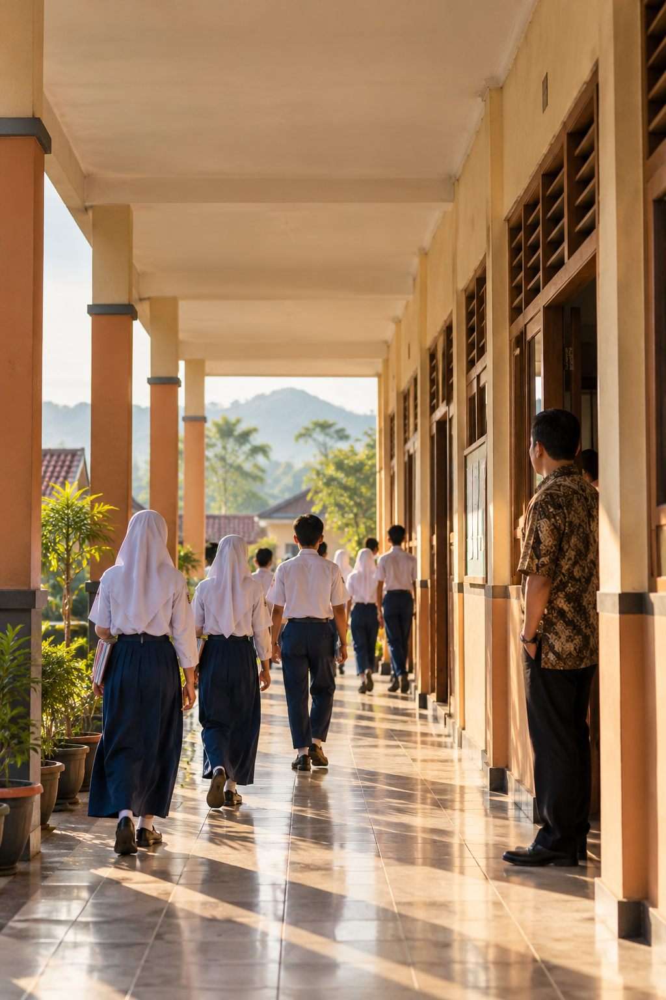
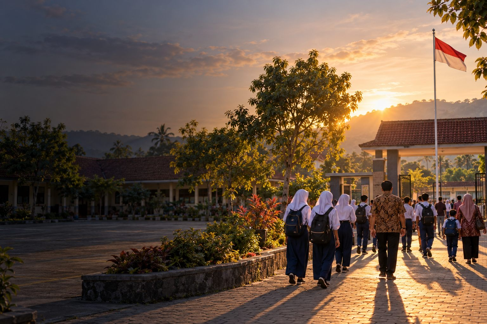

Data tanpa rencana hanya menjadi arsip.
Rencana berbasis data menjadi arah perbaikan.
Bab II menjawab “apa masalahnya?” — kondisi, kebutuhan, dan skala prioritas.
Bab III menjawab “apa yang akan dilakukan?” — program, kegiatan, sasaran, waktu, dan indikator keberhasilan.

Keberhasilan program ditentukan oleh komitmen seluruh warga sekolah, konsistensi pelaksanaan, pemantauan berkelanjutan, dan penggunaan hasil evaluasi sebagai dasar perbaikan.